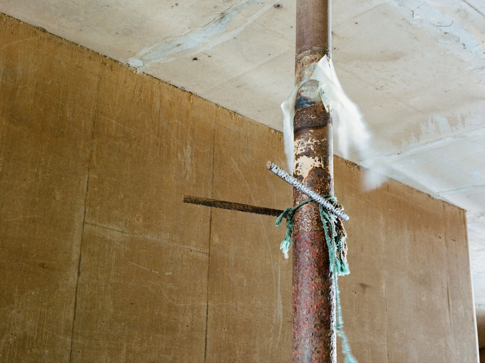
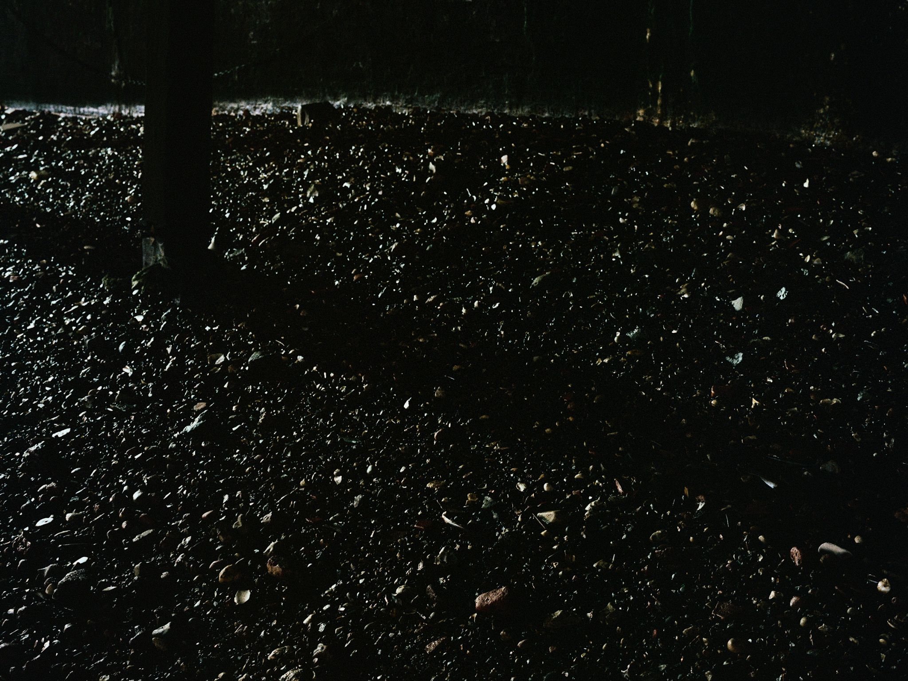
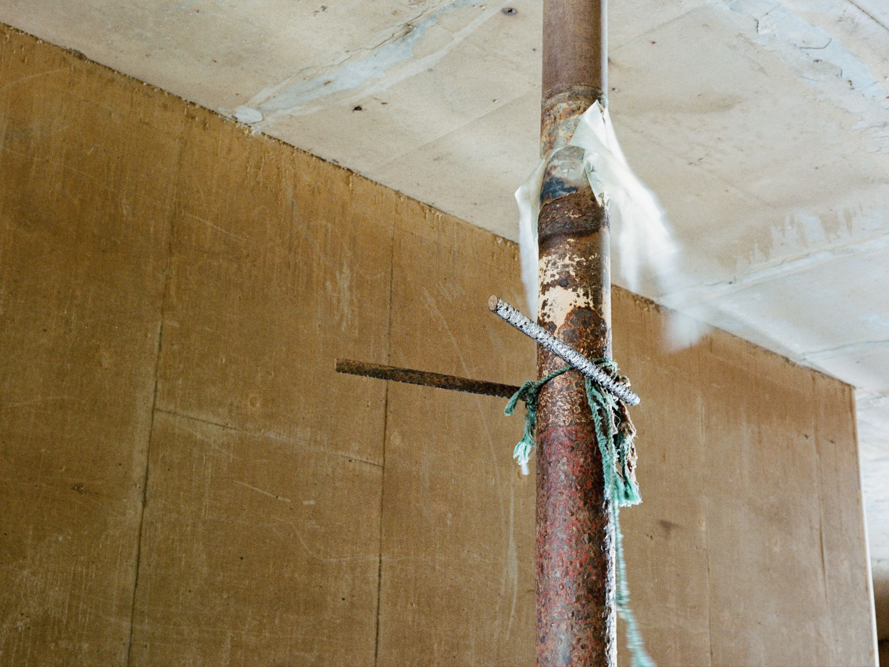
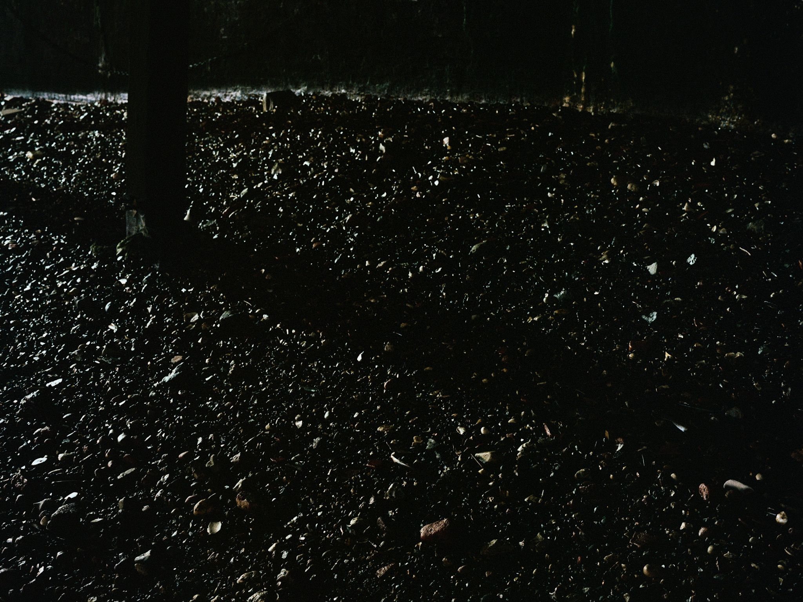

Before The Turn
Twice a day, the tidal Thames drops up to seven meters, uncovering a temporary landscape that feels worlds apart from the bustle of London above. Before The Turn is an ongoing project documenting the unexpected objects and scenes revealed by the retreating tide.